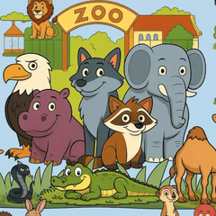
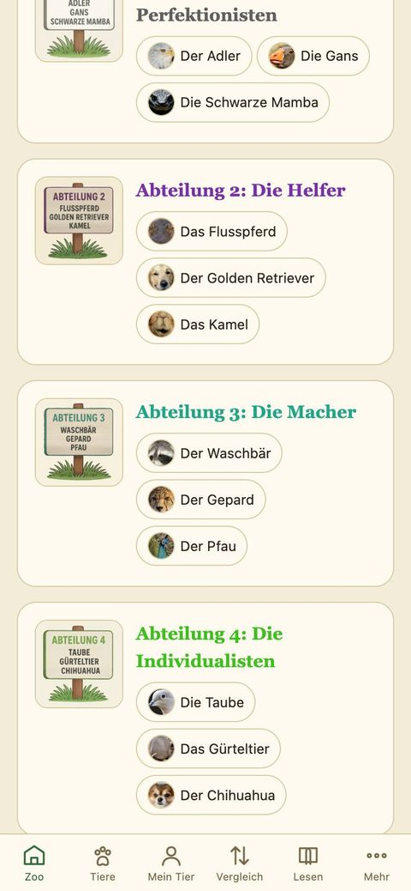
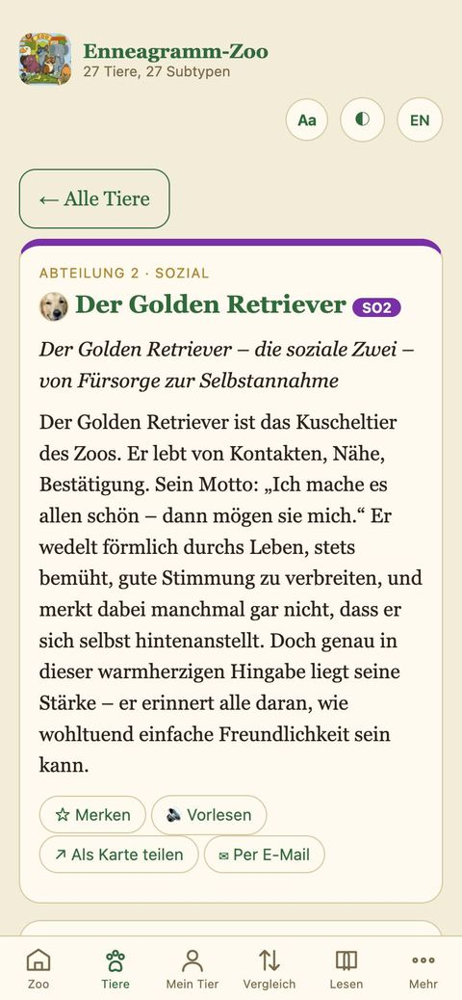
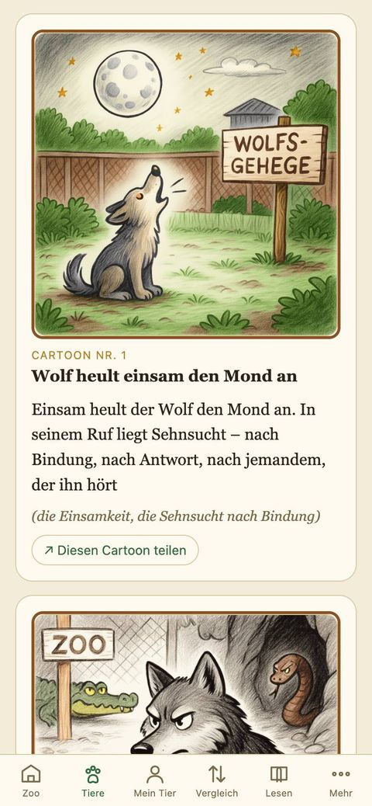
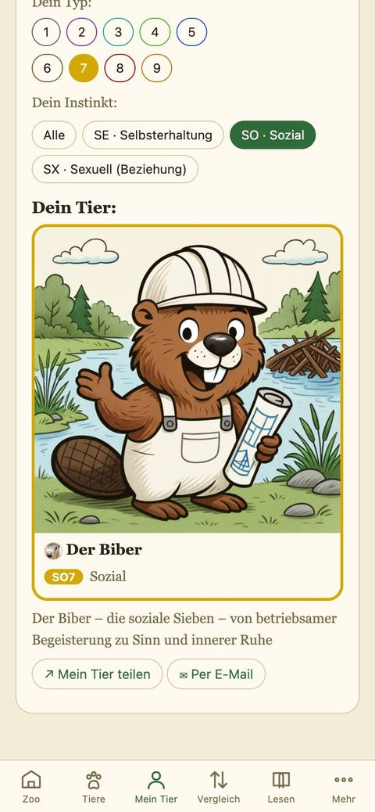
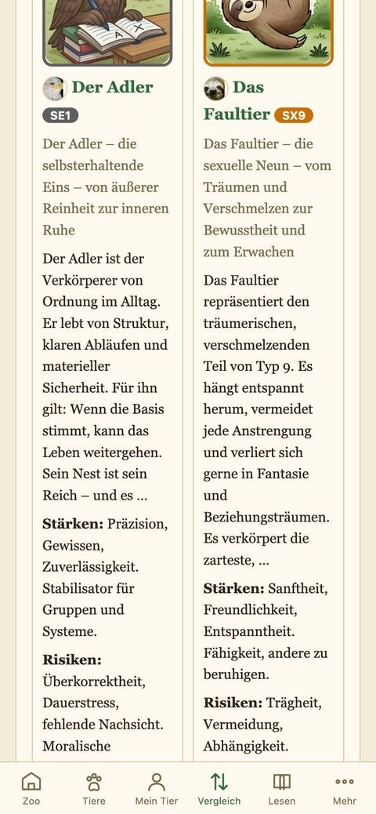
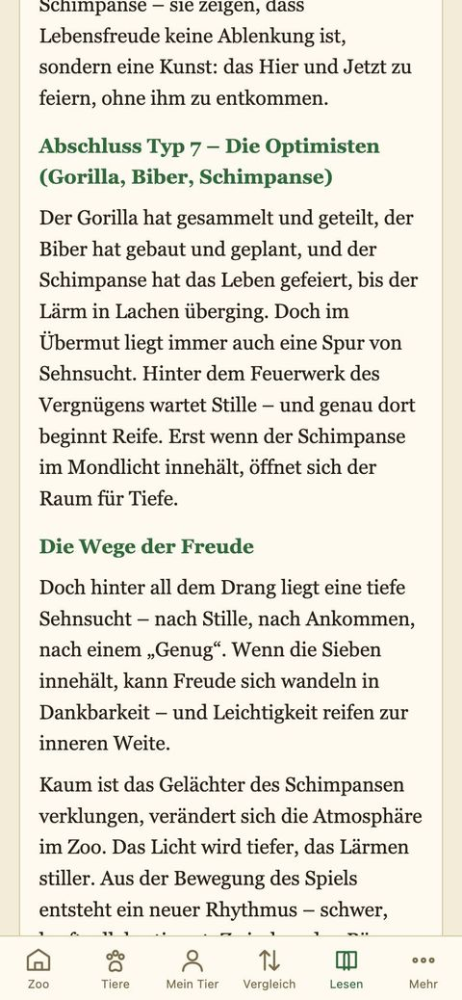
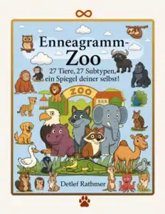

Die App zum Buch

Enneagramm-Zoo
27 Tiere, 27 Subtypen, ein Spiegel Ihrer selbst.
Der Enneagramm-Zoo als App: neun Abteilungen, in jeder drei Tiere, und jedes Tier steht für einen der 27 Subtypen. Dazu 270 Cartoons, die im Buch schwarz-weiß sind und hier in Farbe erscheinen, mit Bildunterschrift und Deutung. Mit einem Augenzwinkern erkennen Sie sich selbst und andere wieder.
Jetzt erhältlich
Enneagramm-Zoo öffnenAlle 27 Tiere freischalten: 14,99 €
Auf Deutsch und Englisch. Zum Kennenlernen sind drei Tiere zum Teil frei, so kann jeder hineinschauen. Für den ganzen Zoo gilt eine einmalige Zahlung, ohne Abo: Einführungspreis 14,99 €, später 16,99 €. Den Zugang bekommen Sie per E-Mail.
Vorlesen: Die Texte der Tiere lassen sich in meiner Stimme anhören, digital vertont, mit meiner Zustimmung. Das ist kein Hörbuch. Die Stimme ist eine Zugabe mit kleinen Betonungsfehlern, ohne Anspruch auf Perfektion. Wer sie nicht mag, liest einfach selbst, die Funktion ist freiwillig.
Der Film zur App
3 Minuten 22: Zookarte, Abteilungen, Tiere, Cartoons, Lesetexte, Tier-Test, Vergleich und Teilen.
Musik: „Dawns Swinging Revelation“ von Detlef Rathmer.
Ein Blick in die App
So sieht die App auf dem Handy aus.






Was die App bietet
Jede Abteilung steht für einen Enneagrammtyp, mit eigenem Schild und drei Tieren. Tippen Sie auf eine Abteilung oder ein Tier.
Zu jedem Tier: Beschreibung, Stärken, Risiken und die Botschaft des Tieres, so wie im Buch.
Zu jedem Tier zehn Cartoons mit Bildunterschrift und Deutung. Im Buch schwarz-weiß, in der App in Farbe; die Farben lassen sich auch abschalten.
Kein Typ bekannt? Wählen Sie die Beschreibungen aus dem Buch, die zu Ihnen passen. Oder wählen Sie Typ und Instinkt und sehen Sie Ihr Tier.
Zwei Tiere nebeneinander mit Beschreibung, Stärken und Risiken. Ein Zufallsknopf hilft beim Entdecken.
Vorwort, Einleitung, die Kapitel zu allen neun Typen mit Fazit, Abschluss und Wegen sowie das Nachwort. Mit Suche und Merkliste.
Tier, Cartoon oder Vergleich als Bildkarte teilen oder per E-Mail senden. Die Bildkarte entsteht auf Ihrem Gerät.
Vorlesen mit der Stimme des Geräts, das Lied zur App, sechs Farbthemen und einstellbare Schriftgröße.
Sprachen
Das Buch zur App

Der Autor
 Detlef Rathmer
Detlef RathmerSachbuchautor, Enneagramm-Experte, Dozent und Coach. Seit dem Jahr 2000 als Heilpraktiker tätig, mit dem Schwerpunkt klassische Homöopathie.
Hinweis: Die App dient der Orientierung und Selbstreflexion mit einem Augenzwinkern. Sie ist keine Diagnose und kein Ersatz für ärztliche oder psychotherapeutische Behandlung. Die Tiere beschreiben Muster, keine Menschen.